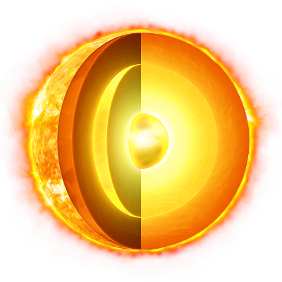

| paramentri orbitali |
| semiasse maggiore |
26-28 × 103 a.l.
7,62 ± 0,32 kpc |
| periodo orbitale |
2,25 – 2,50 × 108 anni
1 anno galattico
|
| Velocità orbitale |
217 km/s
|
| satelliti |
NO |
| anelli |
NO |
| dati fisici |
| diametro equatoriale |
1,391 x 109 km |
superficie |
6,0877 x 1018 m2 |
| velocità di rotazione |
1 993 m/s |
| temperatura |
5 777 K
|
nana gialla
Il Sole appartiene ad un sistema stellare formato da circa 200 miliardi di stelle, che prende il nome di Galassia.
La maggior parte delle stelle è concentrata in una regione di spazio a forma di disco disegnato dai bracci che si dipartono a spirale da un nucleo centrale.
Il disco ha un raggio di circa 40 mila anni luce ed il Sole occupa una posizione periferica, a circa 27 mila anni luce dal centro, intorno al quale ruota
con una velocità di circa 225 km/s. Compie quindi una rivoluzione completa in 200-250 milioni di anni (=1 anno cosmico).
Poichè si ammette oggi che l'età del Sole è di circa 5 miliardi di anni, ciò significa che ha compiuto sino ad ora poco più di 22 rivoluzioni galattiche.
A differenza della maggior parte delle stelle della Via Lattea, che frequntemente appartengono a sistemi binari o multipli, la nostra è una stella singola.
Il Sole è la stella centrale del nostro sistema planetario ed intorno ad esso ruotano i nove pianeti conosciuti, a distanze comrpese tra 46 milioni di km
( Mercurio ) e 7,4 miliardi di km ( Plutone).
La distanza media Terra -Sole è invece pari
149,6 milioni di km
149,6 milioni di km
questa distanza è altrimenti definita come Unità Astronomica (UA) ed è l’unità di misura delle distanze nel sistema solare e nell’universo.
Costituzione del Sole
Dall'esame della densità e conoscendo le altissime temperature della sua superficie (5750 gradi
Kelvin
kelvin
il kelvin è l’unità di misura internazionalee considera come “zero” la prima temperatura non raggiungibile affinchè esista la vita ovvero 273,15 gradi centigradi
, è una stella di classe G2 ed appartiene alla
sequenza principale), si può affermare che Sole deve essere allo stato aeriforme nella parte esterna; procedendo verso l'interno i gas devono essere sottoposti
a pressioni sempre crescenti, cosicchè essi si avvicinerebbero allo stato liquido.
Nulla si conosce sul nucleo solare, perciò le indagini si limitano alla fotosfera, che è la parte luminosa a noi visibile e all'atmosfera che la circonda
e che può essere esaminata durante le eclissi, quando cioè la Luna copre la massima parte del disco solare e perciò l'atmosfera non è più abbagliata dalla
fotosfera. Concludendo, la struttura solare si può schematizzare così:
· nucleo
· fotosfera (con macchie e facole)
· atmosfera (stato di inversione, cromosfera, corona solare)
il nucleo
Per la conoscenza del nucleo ci si basa sull'evoluzione stellare; si calcola che la temperatura del nucleo debba raggiungere i
10 milioni
10 milioni
Questa temperatura è la temperatura necessaria a fare la fusione nucleare, a questa temperatura probabilmente la materia dovrebbe essere allo stato gassoso, non è così a causa della fortissima pressione.
di gradi Kelvin che per questa elevatissima temperatura la materia debba essere allo stato gassoso.
La fotosfera

La fotosfera all'indagine spettroscopica risulta costituita da vari elementi chimici. Mentre il Berillio e il Boro sono presenti in piccolissima quantità, poiché distrutti dalle reazioni termonucleari
durante la fase giovanile del Sole, l'Idrogeno e l'Elio sono di gran lunga i più abbondanti; infatti l'80% dell'energia solare è dovuto alla trasformazione dell'Idrogeno in Elio.
La fotosfera ha l'aspetto ora di reticolo luminoso, ora di granuli, interrotti da macchie (aventi diametro di 500-800km).
Le macchie sono aperture superficiali di cavità profonde fino a migliaia di km occupate da vapori e gas in parte non luminosi; sono sede di grandiosi fenomeni dinamici, termici, magnetici,
elettrici dovuti all'attività interna del Sole. Esse di spostano dal margine orientale (sinistro per chi guarda il Sole nel nostro emisfero e avendo il Nordo alle spalle) verso ovest. Ciò ha permesso
di affermare il movimento di rotazione del Sole da Ovest ad Est intorno ad un asse che è quasi perpendicolare al piano dell'orbita terrestre e che avviene in un periodo di 25-34 giorni nostri e precisamente:
rotazione all'equatore in 25 giorni, ai poli 34 giorni.
Ciò dimostra, non essendo uguale la durata di rotazione di tutti i punti, che il Sole almeno in superficie non è solido e che la velocità di rotazione del Sole, oltre che aumentare verso l'equatore,
aumenta anche con l'altezza dei diversi strati della sua atmosfera; però nelle regioni molto alte la velocità non è uniforme.
Anche la distribuzione delle macchie non è unifrome e il loro numero non è costante. Inoltre esse si muovono indipendentemente dal moto di rotazione. Nei periodi di attività le macchie compaiono a
circa 40g di latitudine nord e sud e lentamente discendono verso l'equatore fino a circa 5g dove vanno estinguendosi, mentre nelle zone suddette di 40g ne compaioni delle altre prima che le precedenti siano scomparse.
l'atmosfera
È dimostrata la sua presenza dall'attenuarsi dello splendore della fotosfera dal centro verso i margini. Questa atmosfera si rende visibile durante le eclissi totali ed e' brillante e rosea.
Lo strato di questa atmosfera più vicino alla fotosfera è detto lo strato di inversione, miscuglio di vapori e di gas dello spessore di qualche migliaio di chilometri; la sua presenza è
dimostrata dall'esame spetroscopico: cioè lo spettro della fotosfera sarebbe uno spettro continuo se i raggi luminosi provenienti da essa non attraversassero la zona di inversione,
dove i vapori e i gas dei numerosi elementi chimici che vi si trovano assorbono le radiazioni corripsondenti a quelli che essi emetterebbero se si comportassero come sorgenti luminose.
Perciò lo spettro solare è costituito da un fondo continuo emesso dalla fotosfera. Solcato da righe nere dovute all'assorbimento da parte dei gas dello strato di inversione.
Segue la cromosfera che è la zona più luminosa dell'atmosfera solare, alta 7000-9000 km, di spendore vario.
Sembra che in essa avvengano continue esplosioni, soprattutto in corrispondenza delle macchie della fotosfera, dove appunto si osservano delle protuberanze (getti di Idrogeno) dell’ altezza
di centinaia di migliai di chilometri, e dei brillamenti che sono improvvisi aumenti di luminosità accompagnati da espulsioni di particelle ionizzate, di radiazioni e di raggi X.
Segue infine la corona solare dello spessore di circa 300.000 km, di spledore maggiore quando ci sono le macchie. Essa è costituita di plasma in movimento turbolento generante una espansione
continua di materiae solare altamente ionizzato (elettroni, protoni e nuclei di Elio), il "vento solare", messo in evidenza da sonde spaziali.
La causa principale della fuga del vento solare è il campo gravitazionale del Sole che, nello sforzo di trattenere il gas coronale entro un volume chiuso, non fa che provocare la continua
accelerzione di esso verso lo spazio interplanetario.
La struttura della corona, che è visibile e perciò oggetto di studio solo durante le eclissi totali di Sole, varia notevolmente da un'celisse all'altra e la sua forma è connessa al ciclo
undecennale della macchie solari, presentandosi più irregolare quando il numero delle macchie è al minimo.
Nella corona si distinguono nettamente tre zone: la prima, alta circa due raggi solari (cioè circa 1.400.000km) è detta corona elettronica, perchè i suoi elettroni liberi diffondono la
luce fotosferica e il suo spettro non presenta ricghe di assorbimento ma è continuo ed è perciò detto "K" (dal tedesco Kontinuum); segue la zona "F" così detta perchè nel suo spettro
compaiono righe di Fraunhofer (di assorbimento); essa è quindi poco luminosa, ma la luce fotosferica viene diffusa dalla polvvere cosmica. La terza è molto rarefatta e la sua luce molto debole
è dovuta agli ioni eccitati. È da questa zona che si origina il "vento solare".
Dal punto di vista chimico la corona solare è composta dagli stessi elementi che costituiscono la fotosfera: 80% di Idrogeno, 19% di Elio e 1% di tutti gli altri elementi presenti nella fotosfera.
Dallo studio del Sole si deduce che l'energia solare è di due tipi: elettromagnetica e corpuscolare.
La radiazione elettromagnetica si estende dai raggi X fino alle onde radio; la gamma dello spettro visibile corrisponde al circa il 50% dell'intera energia emessa dal Sole e raggiunge la
superficie terrestre in 8 minuti e mezzo illuminandola e riscaldandola. Questa energia proviene dalla fotosfera ed è praticamente costante, in quanto le macchie solari provocano variazioni
trascurabili: essa è valuatat in 2 piccole calorie al minuto per cm^2 di superficie terrestre esposta perpendicolarmente ai raggi del Sole (costante solare).
Le radiazioni ultraviolette, generate soprattutto nella bassa corona solare nelle zone attive sopra le macchie, non raggiungono la superficie terrestre in quanto l'ultravioletto "vicino"
(cioè quello a maggior lunghezza d'onda e quindi più "vicino"al violetto dello spettro visibile) viene assorbito dall'ozonosfera, mentre l'ultravioletto "lontano", cioè quello a lunghezza
d'onda minore, viene assorbito fra i 100 e i 200km di altezza dall'atmosfera terrestre dove le alte temperature, registrate dai satelliti, risentono delle variazioni dell'attività solare.
La radiazione corpuscolare costituita di ioni (per lo più di Idrogeno) e di elettroni dà luogo al "vento solare".